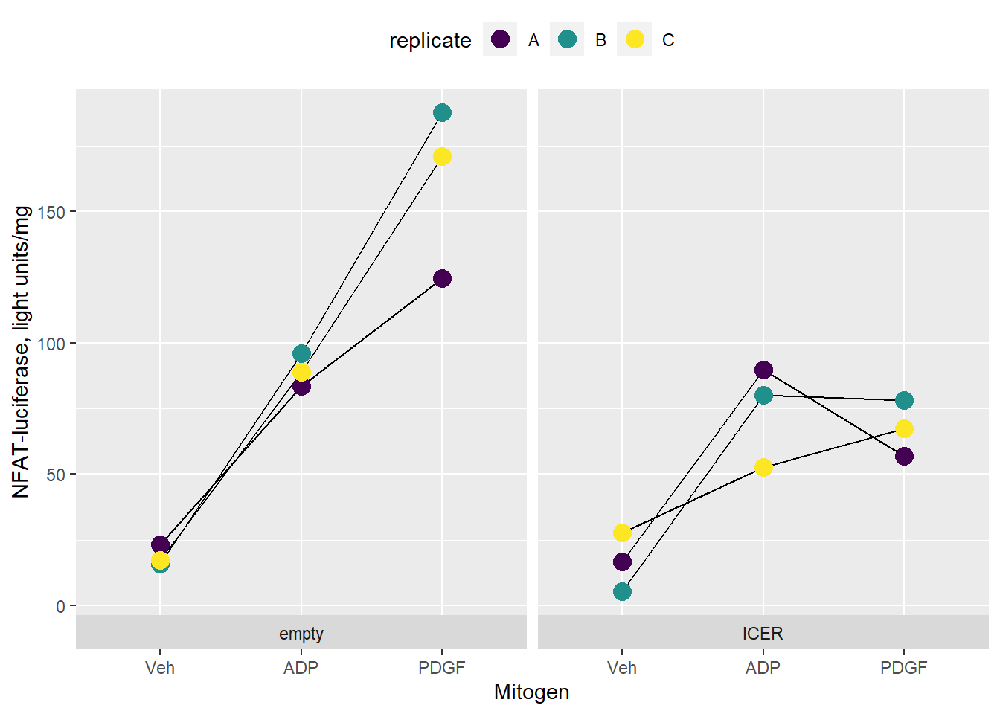
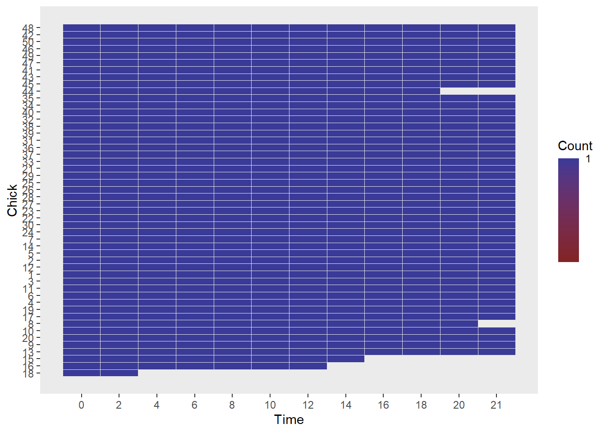

Chapter 34 Linear Regression
Fitting models to data, fitting models to data, fitting models to data.
Regression analysis is used for a few different purposes:
- Fitting a model to a data set; in particular, to derive model parameters.
- Calculating unknowns based upon a standard curve.
- Calculating the fraction of the response Y that is determined by a predictor X.
Regression is a major technique for conducting causal inference because it has both an outcome variable (typically \(Y\)) and a predictor variable (typically \(X\)). Data suitable for regression analysis are experiments that generate \(X,Y\) pairs.
In one scenario, the predictor variable \(X\) is under complete experimental control by the researcher. In a second scenario, a variable measured by the researcher “out in the field” is taken as a predictor variable. Although it is not necessarily under true experimental control, in some situations it can be taken as a predictor. The latter technique is used a lot in ecological research, public health and economics research, for example.
In regression experiments that are the focus of this chapter, each of the outcome and the predictor variables have measured scalar properties, for example, continuous intervals. However, regression methods exist for working with outcome variables representing discrete and/or ordinal data, which we’ll discuss when we get to general linear regression.
34.1 The linear regression model
Linear regression is performed on data sampled through some process involving random selection of \(i=1 \ to \ n\) independent pairs of outcome \(Y\) and predictor \(X\) variables, whose values are \(y_i\) and \(x_i\), respectively.
The two variables have a linear relationship such that a line drawn through them would have a y-intercept of \(\alpha\) and slope of \(\beta\):
\[Y=\alpha+\beta X\]
Of course, models are perfect but data are not.
Most, if not all of the data points would deviate from the model. Any given value for \(Y\) incorporates an error term \(\epsilon_i\) along with the model parameters at some value of \(X\):
\[y_i=\alpha+\beta x_i+\epsilon_i\]
\(\epsilon_i\) is known as the residual, or deviate, which is calculated as the difference in the value between \(y_i\) and \(\hat y_i\), where the latter is a corresponding data point on the best-fit regression line.
Thus, residuals are the difference between the real data and the values predicted by the model.
This isn’t the first time you’ve been exposed to the concept of the residual, which was first introduced as using the term deviate when discussing how variation is calculated in t-tests. We’ve also referred to it as the variate. They all mean the same thing. Variate = deviate = residual. Sorry, that’s statistical jargon for you.
In regression, residuals are often useful to assess how well the model fits the data.
This brings us to point about the roots of regression modeling. Models are fit to data. Data are not fit to models.
Think of data as fixed and real, like a foot. Just as we try on shoes of various sizes until one fits the foot best, we fit different models to data until one fits the data best.
What is meant by best fit models is they explain the data better than other models we could have chosen. In computer-assisted regression, we start with a model comprised of initial parameter estimates. The computer calculates the residuals to assess the fit, before changing the parameters and checking if the fit is better. After a few iterations of this process a best fit model is solved.
34.2 Least squares fitting
The question you might ask yourself is the following: If models are perfect and data are not, then how is a perfect model fit to imperfect data? The answer is by using least squares fitting method.
Let’s imagine we have an imperfect data set. Let \(\hat\alpha\) and \(\hat\beta\) represent the “best fit” solutions for the slope and intercept of the data’s linear model. Thus, \[y_i=\hat\alpha+\hat\beta x_i+\epsilon_i\] rearrange, \[\epsilon_i=y_i-\hat\alpha+\hat\beta x_i\]
Just as for deviates or variates relative to a group mean discussed previously, residuals summed alone cancel out, but don’t if they are squared. \[\epsilon_i^2=(y_i-\hat\alpha+\hat\beta x_i)^2\]
The model is best fit when the sum of the squared residuals reaches its minimum form: \[\sum_{i=1}^n\epsilon_i^2=\sum_{i=1}^n(y_i-\hat\alpha+\hat\beta x_i)^2\]
In other words, the sum of the squared residuals are known as the least squares. The values for the model parameters are ideal when the sum of the squared residuals is the lowest possible value.
A few important relationships arise for linear least squares models that render calculating the model parameters fairly trivial. The best fit residuals are \(\hat\epsilon_i=y_i-\hat y_i\).
The best fit slope is \[\hat\beta=\frac{\sum_{i=1}^n(yi-\bar y)(x_i-\bar x)}{\sum_{i=1}^n(x_i-\bar x)^2}\]
And the best fit intercept is \(\hat\alpha=y_i+\hat\beta x_i\).
Thus, the linear regression solution can be computed as \(\hat y_i=\hat \alpha+\hat\beta x_i\)
These same ideas are applied to nonlinear regression, too. In practice for nonlinear regression, which have more model parameters, computer-assisted fitting routines iteratively adjust the model parameters, each time checking how each change impacts the value of \(\sum_{i=1}^n\epsilon_i^2\). The least squares solution for the model is achieved when \(\sum_{i=1}^n\epsilon_i^2\) is minimized.
34.3 The practical importance of linear model parameters
The intercepts and slopes of linear models typically have biological meaning and so are important in their own right. For example, let’s imagine we are measuring the loss of a protein, in its concentration units, over a time period, and its loss is linear (which is rare, but whatever).
The y-intercept would represent an estimate of the amount of protein in the initial state. We wouldn’t have to measure it directly, which can be hard to do, but we could extrapolate from the linear model to estimate a value!
The slope estimates the decay rate of the protein, as its units are concentration/time.
We might wish to perform experiments testing various hypotheses about how specific conditions, or protein mutations, affect the decay rates (slope) or initial concentrations (intercept).
The specific conditions and protein mutations are predictor variables, that can be at many levels. We’d set up a assay protocol to generate slope and/or intercept parameters over several independent experiments. Then we’d put those parameter values in a table and compare the effects of the predictor variables, using either by t-test or ANOVA, for example!
34.4 Linear model standard errors
Regression fitting is associated with uncertainty which is important to quantify. The standard error of a linear regression is derived from the residuals. \[s_{yx}=\sqrt{\frac{\sum(y_i-\hat y_i)^2}{n-2}}\]
The standard error of the slope (b) and of the intercept (a) are calculated separately, each using \(s_{yx}\):
\[s_b=\frac{s_{yx}}{\sqrt{\sum(x_i-\bar x)^2}}\] \[s_a=s_{yx}\sqrt{\frac{\sum x_i^2}{n\sum(x_i-\bar x)^2}}\]
34.5 Linear regression in R
First we create vectors for the values of our Y and our X variables. Although a data frame is not necessary to run the linear regression function, it will be useful for plotting latter.
X <- c(2, 6, 8, 12, 14, 18)
Y <- c(12, 14, 6, 10, 2, 4)
data <- data.frame(X, Y)Think of a regression model not so much as describing a relationship between X and Y, but the degree by which the values of X predicts the values of Y.
Thus, the command lm(Y~X) in English would read, “linear model for Y predicted by X”, or “Y by X”. Let’s name an object ‘model’, run it and print the results. In regression, it’s almost always useful to create objects like ‘model’ since there are so many additional functions that can be run on the model:
model <- lm(Y~X); model##
## Call:
## lm(formula = Y ~ X)
##
## Coefficients:
## (Intercept) X
## 14.190 -0.619The sparse output yields two model parameters, or cryptically named coefficients: the y-intercept (intercept) and the slope (X). There’s actually quite a bit more information not being printed, including all the residual values, which you can explore by typing str(lim(Y~X)) in the console.
Because 95% confidence intervals are always useful, use the confit function to calculate these ranges for both model parameters!
confint(model, level=0.95)## 2.5 % 97.5 %
## (Intercept) 5.828676 22.5522765
## X -1.358133 0.1200381Thus, there is a 95% chance the true y-intercept is between 5.8 and 22.5, while the sample estimates the true slope is between -1.358 and 0.12. The fact that the latter range of values includes the value of zero foreshadows that the slope will not differ from zero upon statistical testing!
R’s summary function is the standard way to print additional detail about the model and its analysis.
summary(model)##
## Call:
## lm(formula = Y ~ X)
##
## Residuals:
## 1 2 3 4 5 6
## -0.9524 3.5238 -3.2381 3.2381 -3.5238 0.9524
##
## Coefficients:
## Estimate Std. Error t value Pr(>|t|)
## (Intercept) 14.1905 3.0117 4.712 0.00923 **
## X -0.6190 0.2662 -2.326 0.08065 .
## ---
## Signif. codes: 0 '***' 0.001 '**' 0.01 '*' 0.05 '.' 0.1 ' ' 1
##
## Residual standard error: 3.45 on 4 degrees of freedom
## Multiple R-squared: 0.5748, Adjusted R-squared: 0.4685
## F-statistic: 5.408 on 1 and 4 DF, p-value: 0.0806534.6 Intepretation
Let’s interpret the summary output.
34.6.1 Residuals
For each value of X, these are the difference between the value of Y for the data point and the corresponding value of Y on the best fit model line. The sum of the residuals should approach zero.
34.6.2 Coefficients
Not only does this provide the values for the slope and intercept, but also their standard errors, which can be used to construct confidence intervals.
There is also a t-test for each.
Both t tests are analogous to the one-sample t test. Both compare the estimate of the parameter from regression to the population value of zero.
Thus, \(t_b=\frac{b-\beta}{s_b}\) and \(t_a=\frac{a-\alpha}{s_a}\), where \(\beta\) and \(alpha\) are population slope and intercept, respectively, and their standard errors in the denominators are calculated as above.
These t-tests evaluate the null hypothesis that the parameter values are zero. The p-value is the probability of a making a type1 error by rejecting the null. Thus, if we reject the null we agree there is slope in the relationship, and if there is slope then the predictor variable is responsible for some level of the outcome response! What fraction that is will be derived from the \(R^2\) statistic (see below).
For the slope, the comparison is usually pretty important. If the slope is not different from zero, that implies the regression fails to show that levels of X predict levels of Y. That seems to be the case here (something seems to be going on, but the experiment it represents is probably under-powered).
For the intercept, whether the t-test is worth interpreting depends on the situation. A positive t-test result simply tells us that, when X=0, there is more (or less) than zero of whatever Y represents. Sometimes a non-zero intercept is good, and sometimes it is not-so good. Sometimes that value is meaningful scientifically, such as when we use a y-intercept to represent a physical parameter (eg, Lineweaver Burke plots for \(v_{max}\) in Michaelis-Menten enzyme kinetics or the ratio of bound to free ligand in Scatchard Plots in linear transformation of binding assay data).
34.6.3 Degrees of freedom
We lose a degree of freedom for each model parameter estimated. We estimate two model parameters from 6 pairs of data points, leaving us with 4 degrees of freedom.
34.6.4 R-squared
\(R^2\) is the coefficient of determination that takes on the values from 0 to 1. \(R^2\) is generally used as an effect size to express how well a model fits the data. The larger the value, the better the fit.
‘Multiple’ \(R^2\) is just R jargon to represent the full model with its 2 parameters. It is calculated as the variation associated with the model divided by the total variation: \[multiple\ R^2=\frac{\sum(\hat y_i-\bar y_i)}{\sum(y_i-\bar y)}\]
If were able to reject the null, for example, we would conclude that ~57% of the response to Y is associated with the levels of X. But because we cannot reject the null, we cannot make that claim! The effect size might as well be zero!
‘Adjusted’ \(R^2\) is transformed by the sample size \(n\) and number of model parameters \(p\).
\[R_{adj}^2=1-(1-R^2(\frac{n-1}{n-p-1}\]
‘Adjusted’ \(R^2\) provides a way of accounting for one of the problems with \(R^2\) that may not seem intuitively obvious to you, but is true: For a given model and data, \(R^2\) will increase with the number of predictor variables used. For example, \(R^2\) will increase simply by adding more time points in a time series or doses in a dose series.
The adjusted \(R^2\) is thus a more conservative way of calculating the degree by which the predictor variable accounts for a response. It is also used when comparing models with differing numbers of parameters to a single data set.
34.6.5 F-statistic
The F-statistic in linear regression is the same F-statistic that we saw in ANOVA. In fact, you can run an ANOVA on the model and get some of the same results as you see in the summary(model) output, just in different form. For example, the F statistic, df’s and the p-value’s are all identical!
anova(model)## Analysis of Variance Table
##
## Response: Y
## Df Sum Sq Mean Sq F value Pr(>F)
## X 1 64.381 64.381 5.408 0.08065 .
## Residuals 4 47.619 11.905
## ---
## Signif. codes: 0 '***' 0.001 '**' 0.01 '*' 0.05 '.' 0.1 ' ' 1Linear regression and ANOVA are identical in this regard! They perform the same calculations. So far, I’ve spoken about regression in situations where the \(X\) variable, the predictor, is continuous.
In fact, the same regression technique can be used when the predictor variables are discrete. The results they generate are identical to ANOVA. We’ll discuss the general linear models later in the course.
There are many researchers who are more comfortable with regression analysis, and do their work that way. Others are more comfortable with ANOVA analysis, and run their calculations with those methods and use that syntax. But it’s all the same mathematically, for the most part, and one arrives at the same inferential crossroads, irrespective.
As you can see, the F-statistic from the regression summary is the ratio of the mean square for the regression model (\(df=p-1\), p=number of parameters) to the mean square of the residuals.
\[F_{dfn,dfd}=\frac{\frac{\sum(\hat y_i-\bar y)^2}{df_n}}{\frac{sum( y_i-\hat y)^2}{df_d}}\]
The F-statistic tests the null hypothesis that the variance associated with the regression model is no different than that of the residual. Put another way, it tests the null that the slope of the regression is equal to zero.
34.6.5.1 Overall
If the value of the F-statistic is extreme, the null would be rejected. Not so in this case. As such, we can’t draw any conclusions from the \(R^2\) value, either. As stated above.
This is a negative result, and it’s not difficult to understand why: there are too few degrees of freedom to work with. In regression, it’s important to have enough degrees of freedom. The more parameters in the model, the more degrees of freedom will be necessary to derive the values of those parameters and to test whether a relationship exists. The need for more degrees of freedom in regression is the statistical equivalent to the need for more cowbell in a rock n’ roll song.
34.6.6 Plotting regression results
This is very simple to do using ggplot. The basic plotting function is shown below. The stat_smooth function is quite versatile. By default, it produces an error band for the regression to illustrate the uncertainty. Note how the error varies across the range of predictor values and is greatest for extreme values of the predictor. It is typical for such confidence bands of regressions to have this ‘bow tie’ look.
ggplot(data, aes(X, Y)) +
geom_point(
size=5
)+
stat_smooth(
method="lm",
color="#002878"
)+
theme_classic(
)
34.6.7 Visualizing residuals
Residuals are used to evaluate, visually, how well the model fits the data. For example, a linear model may not fit well some part of the data set.
To create residual plots, we can grab the residual values (for completeness) and also the predicted values (to plot) for the model object by passing our model through the residuals and predict functions, respectively. Recall we created the object model above and promised that it could be put to a lot of use. We can call produce the data while simultaneously adding them to data, our original data frame:
data$residuals <- residuals(model)
data$predicted <- predict(model)To plot residuals, we just add things by layer:
ggplot(data, aes(X, Y))+
geom_segment(
aes(xend=X, yend=predicted)
)+
geom_smooth(
method="lm",
size=1,
se=F,
color = "gray"
)+
geom_point(
color="#002878",
size=2
)+
geom_point(
aes(y=predicted),
color="#d28e00",
size=3
)+
theme_classic(
)
The effect isn’t particular dramatic with this trivial data set, But these residual plots become much more interesting when working with more complex models or data sets with far more values and complexity. For example, if the residuals “fit” better on one end of the predictor scale but not the other, we would probably seek out a better model and see if that fits the data better.